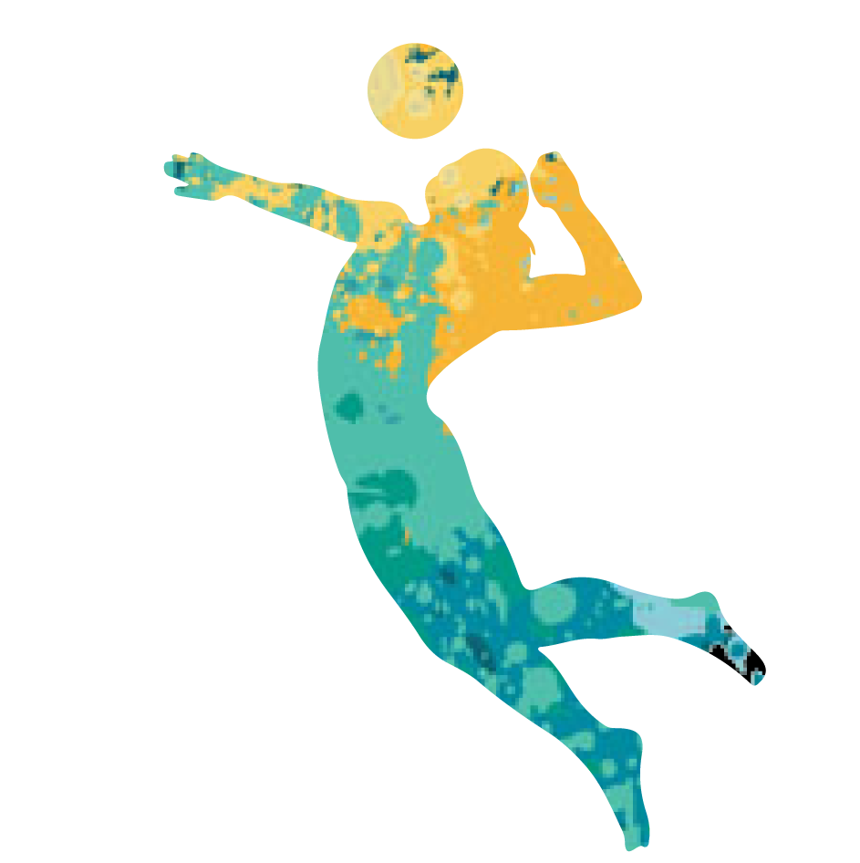
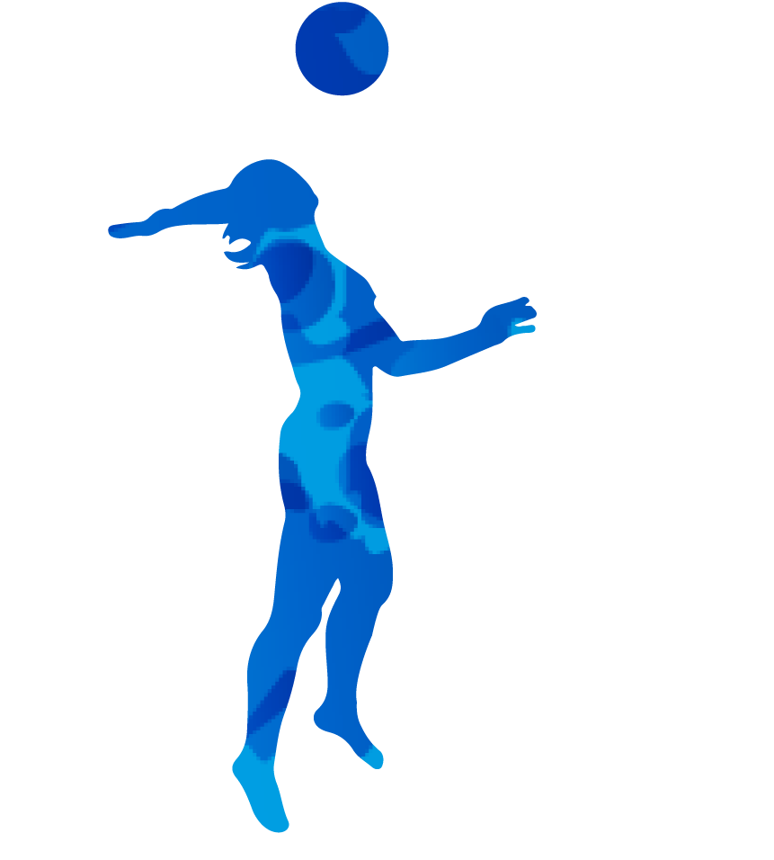
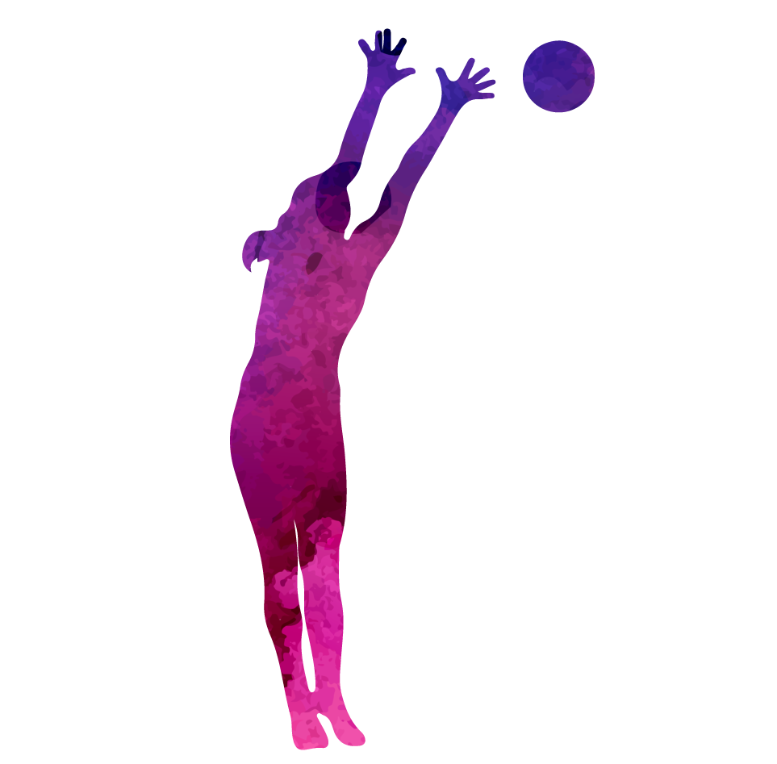
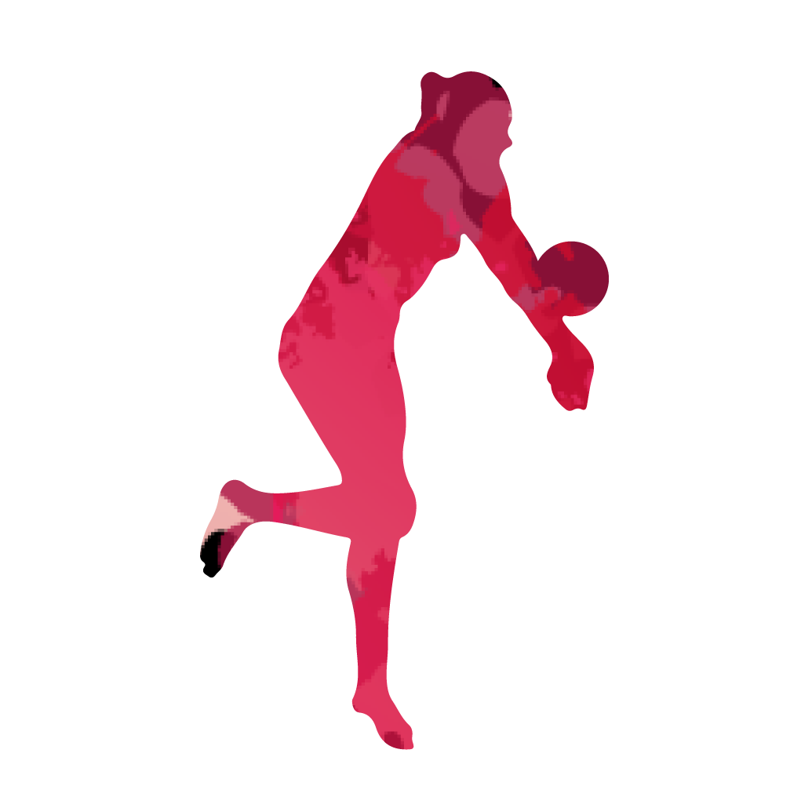

中華女排
中華台北女子排球代表隊是中華民國的國家女子排球代表隊參加國際比賽使用的名稱，
由中華民國排球協會負責組隊與管理。
中華女排曾在1990年及2006年兩度參加世錦賽，
最佳成績是1990年的第11名，2006年則為第12名；
在亞洲最好的成績是2006年杜哈亞運的銅牌
球員資料
歷史戰績
精彩片段
球員資料
此為2017年世界大學運動會球員名單 移動游標查看詳細資料

主攻
蕭湘凌
張秝芸
吳韋華
李姿瑩
陳姿雅

快攻手
陳怡如
曾琬羚
陳菀婷
溫憶慈

舉球員
林書荷

自由球員
楊夢樺
回頁首
歷史戰績
最佳紀錄
2006亞洲運動會
季軍
其他紀錄
請按"紀錄"
FIVB排名
第33名
回頁首
精彩片段